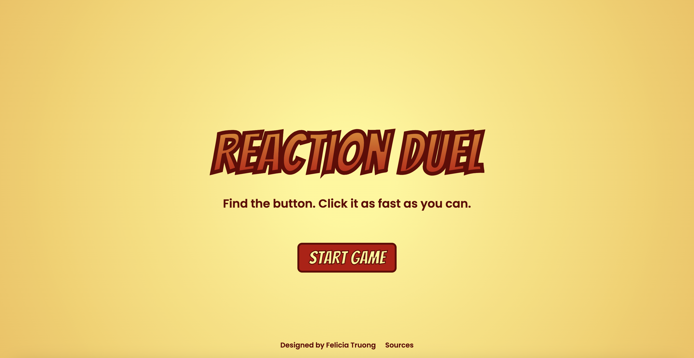
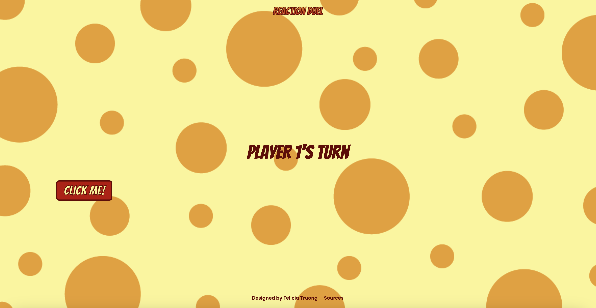
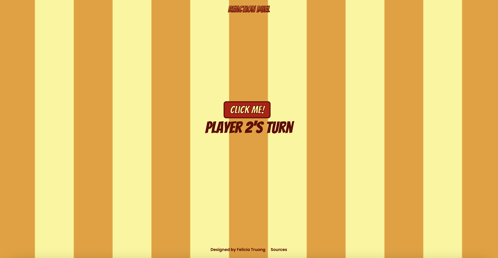

DES 157A · Interactive Game
Reaction Duel
A two-player reaction-time game built around randomness, visual distractions, and competition.
My role
Game design and front-end development
Tools
Adobe Illustrator, HTML, CSS, JavaScript
Project type
Course project · DES 157A

01 / Project Overview
Project Overview
Reaction Duel is a two-player reaction-time game that challenges players to find and click a button as quickly as possible. Developed as a final project for DES 157A, the game explores how randomness, visual design, and suspense can make a simple interaction more engaging.
My goal was to create a game that was easy to understand but challenging enough to keep people coming back for another round.
02 / The Challenge
The Challenge
Reaction-time games are built around a simple interaction: recognize a signal and respond as quickly as possible. I wanted to build on that familiar idea by making each round feel different from the last.
The challenge was to create an experience that was easy to pick up while introducing enough unpredictability to keep players alert, engaged, and motivated to improve their performance.
My design question
How might I turn a simple reaction-time test into a fun, competitive experience that people want to play repeatedly?
03 / Design and Development
Designing for Unpredictability
I made randomness the central theme of Reaction Duel. Rather than relying on a predictable sequence, I incorporated several elements that made each round feel different.
Randomized button placement and timing
The button appears in different positions and at unpredictable times, challenging players to stay alert and react quickly rather than rely on memorized patterns.
Distracting visual backgrounds
I created two patterned backgrounds that appear randomly throughout the game. I also chose colors that fit the visual theme while adding another layer of distraction to the gameplay.
Music and suspense
I added background music to build anticipation and create a more exciting atmosphere as players waited for their chance to react.
Together, these decisions were intended to make each playthrough feel less predictable and encourage players to try again.


04 / Testing
Testing the Experience
After developing the game, I invited friends to test it. I wanted to make sure the game functioned properly while also seeing how people responded to the gameplay.
I expected them to play once or twice, then move on. Instead, they continued playing for nearly half an hour, repeatedly trying to beat their previous times or win against each other. They even described the game as addictive.
"Addictive"
This informal testing gave me an encouraging indication that the experience was engaging. The unpredictable gameplay made players want to keep competing, even after they had already tried it several times.
It also reminded me that getting a project to work technically is only part of the process. Observing how people actually use and respond to a product can reveal opportunities to make the experience more enjoyable.
05 / Next Steps
What I Would Improve Next
If I continued developing Reaction Duel, I would focus on making the game more competitive and creating greater variety across multiple rounds.
These ideas would build on the unpredictability of the original game while giving players new challenges to work toward.
06 / Reflection
Key Takeaway
Reaction Duel taught me that an engaging experience doesn't end at functional code. The way an interaction looks, feels, and responds to people can shape whether they simply try a product or genuinely enjoy using it.
Seeing my friends continue playing helped me recognize the value of testing ideas with real people and paying attention to their behavior. It also encouraged me to keep exploring how thoughtful interaction design can turn a simple idea into an experience that brings people together.